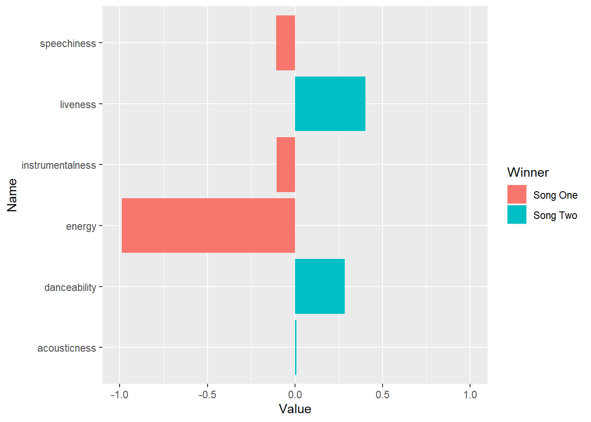

# Import libraries library(tidyverse)
── Attaching core tidyverse packages ──────────────────────── tidyverse 2.0.0 ── ✔ dplyr 1.1.3 ✔ readr 2.1.4 ✔ forcats 1.0.0 ✔ stringr 1.5.0 ✔ ggplot2 3.4.4 ✔ tibble 3.2.1 ✔ lubridate 1.9.3 ✔ tidyr 1.3.0 ✔ purrr 1.0.2 ── Conflicts ────────────────────────────────────────── tidyverse_conflicts() ── ✖ dplyr::filter() masks stats::filter() ✖ dplyr::lag() masks stats::lag() ℹ Use the conflicted package (<http://conflicted.r-lib.org/>) to force all conflicts to become errors
library(shiny)
Warning: package 'shiny' was built under R version 4.3.2
library(ggplot2)
# Load in the music data musicData <- get(load("../Data/data-music.RData")) # Show the music data str(musicData)
tibble [157,964 × 24] (S3: tbl_df/tbl/data.frame) $ danceability : num [1:157964] 0.448 0.606 0.64 0.473 0.466 0.494 0.246 0.626 0.678 0.284 ... $ energy : num [1:157964] 0.746 0.942 0.513 0.854 0.951 0.933 0.483 0.859 0.812 0.544 ... $ key : int [1:157964] 8 6 1 0 5 2 8 11 11 11 ... $ loudness : num [1:157964] -6.09 -2.6 -6.91 -3.74 -3.31 ... $ mode : int [1:157964] 1 0 1 1 1 1 1 0 0 1 ... $ speechiness : num [1:157964] 0.0601 0.115 0.0305 0.0584 0.126 0.152 0.0359 0.0378 0.231 0.0353 ... $ acousticness : num [1:157964] 0.0124 0.0727 0.0704 0.0251 0.0016 0.00255 0.71 0.00209 0.207 0.744 ... $ instrumentalness: num [1:157964] 6.62e-01 2.07e-06 2.34e-03 1.85e-02 2.42e-03 1.08e-01 2.30e-01 4.24e-03 8.41e-05 6.94e-06 ... $ liveness : num [1:157964] 0.108 0.0709 0.102 0.0748 0.351 0.109 0.102 0.081 0.11 0.0888 ... $ valence : num [1:157964] 0.208 0.518 0.124 0.318 0.499 0.308 0.0751 0.153 0.609 0.0753 ... $ tempo : num [1:157964] 140 106 117 108 165 ... $ id_track : chr [1:157964] "7KCVv4G214JjjAz2B9eM7H" "5aWhs651KYM26HYM16kRdk" "4EcJBIXjI5y9TA6CBfIljo" "6jMRqEHVRC3iamsSscJlbz" ... $ duration_ms : int [1:157964] 310507 250093 264480 271933 222147 273707 278093 223680 241787 249947 ... $ time_signature : int [1:157964] 4 4 4 4 4 4 4 4 4 4 ... $ id_album : chr [1:157964] "72ZfMxLCPG8mlWC0TXfZQi" "72ZfMxLCPG8mlWC0TXfZQi" "72ZfMxLCPG8mlWC0TXfZQi" "72ZfMxLCPG8mlWC0TXfZQi" ... $ track_name : chr [1:157964] "Wonderful Wonderful" "The Man" "Rut" "Life To Come" ... $ track_number : int [1:157964] 1 2 3 4 5 6 7 8 9 10 ... $ id_artist : chr [1:157964] "0C0XlULifJtAgn6ZNCW2eu" "0C0XlULifJtAgn6ZNCW2eu" "0C0XlULifJtAgn6ZNCW2eu" "0C0XlULifJtAgn6ZNCW2eu" ... $ album_name : chr [1:157964] "Wonderful Wonderful" "Wonderful Wonderful" "Wonderful Wonderful" "Wonderful Wonderful" ... $ release_date : chr [1:157964] "2017-09-22" "2017-09-22" "2017-09-22" "2017-09-22" ... $ total_tracks : int [1:157964] 10 10 10 10 10 10 10 10 10 10 ... $ genre : chr [1:157964] "indie rock" "indie rock" "indie rock" "indie rock" ... $ artist_name : chr [1:157964] "The Killers" "The Killers" "The Killers" "The Killers" ... $ popularity : int [1:157964] 80 80 80 80 80 80 80 80 80 80 ...
sectionsToSnip <- c( "danceability", "energy", "speechiness", "acousticness", "instrumentalness", "liveness" ) songOne <- musicData %>% subset(track_name == "Dear Maria, Count Me In") songOne <- songOne[1,] songTwo <- musicData %>% subset(track_name == "Alive") songTwo <- songTwo[1,] graphFrame <- data.frame(matrix(ncol = 3, nrow = 0)) colnames(graphFrame) <- c("Name", "Value", "Winner") for(i in 1:length(songOne)) { if(names(songOne[i]) %in% sectionsToSnip) { name = names(songOne[i]) if(songOne[[i]] > songTwo[[i]]) { value <- abs(songOne[[i]]) * -1 winner <- "Song One" } else { value <- abs(songTwo[[i]]) winner <- "Song Two" } graphFrame <- rbind( graphFrame, data.frame( "Name" = name, "Value" = value, "Winner" = winner ) ) } } graphFrame
Name Value Winner 1 danceability 0.28400 Song Two 2 energy -0.98900 Song One 3 speechiness -0.10600 Song One 4 acousticness 0.00752 Song Two 5 instrumentalness -0.10400 Song One 6 liveness 0.40200 Song Two
ggplot( graphFrame, aes( x = Name, y = Value, fill = Winner ) ) + geom_bar( stat = "identity" ) + coord_flip() + ylim( -1.0, 1.0 )
